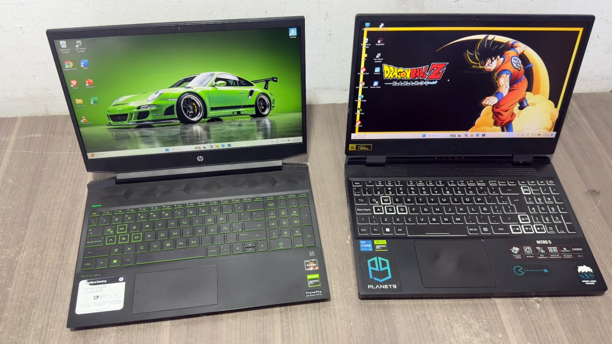
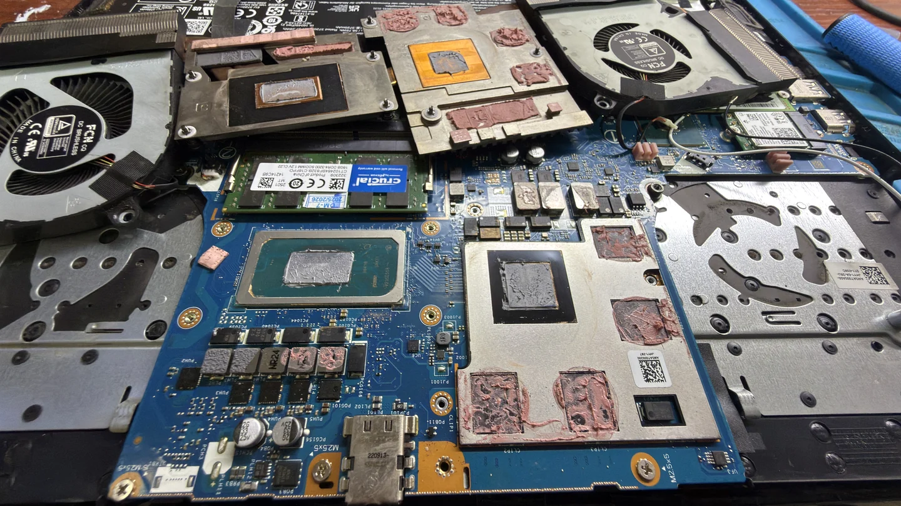
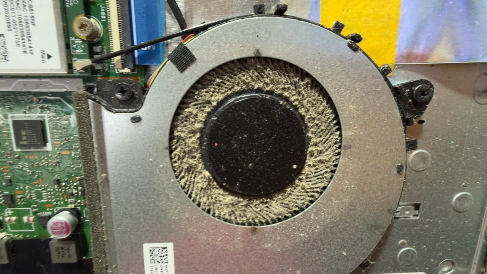

Reparación de portátiles
Diagnóstico de fallas de encendido, imagen, carga, temperatura y funcionamiento.
Ver reparación de portátiles →JE Soluciones ofrece diagnóstico técnico y reparación de computadores de escritorio, portátiles, celulares y televisores en Dosquebradas y Pereira. Atendemos fallas de encendido, imagen, carga y alimentación; realizamos reparaciones microelectrónicas de placas y circuitos, y optimizamos los computadores para mejorar su velocidad y rendimiento. Te explicamos el diagnóstico y las opciones antes de reparar. También ofrecemos computadores nuevos y usados, accesorios y repuestos.
Responde unas preguntas breves. Si lo deseas, envía el resumen a JE.
Iniciar orientación →Responde tres preguntas. La guía no reemplaza una revisión técnica.
Atendemos computadores de escritorio y portátiles. Encontramos la causa de la falla y te explicamos las opciones antes de reparar.
Diagnóstico de fallas de encendido, imagen, carga, temperatura y funcionamiento.
Ver reparación de portátiles →Diagnóstico y reparación electrónica de placas madre, componentes y circuitos de carga o encendido, según evaluación.
Conocer el servicio →Evaluación de fallas de imagen, temperatura, rendimiento y funcionamiento en PC de escritorio y torres.
Ver reparación de computadores →Limpieza interna y revisión del sistema de ventilación y refrigeración de equipos de escritorio y portátiles.
Consultar mantenimiento →Revisión de cargadores y adaptadores que no cargan, se desconectan o presentan fallas de alimentación.
Consultar por mi cargador →Diagnóstico de accesorios electrónicos, cables, conectores y componentes. La reparación depende de la falla y el modelo.
Consultar por un accesorio →También diagnosticamos computadores portátiles, celulares y televisores; consulta por computadores nuevos y usados, accesorios tecnológicos, partes y repuestos disponibles.
Reparación de portátiles → · Reparación de celulares → · Reparación de televisores → · Computadores, partes y accesorios →
Revisamos computadores de escritorio y portátiles que no encienden, no dan imagen, están lentos, se recalientan o tienen fallas de carga, alimentación u otros problemas. Primero diagnosticamos la causa y luego te explicamos las opciones; la viabilidad depende del daño y del equipo.
Evaluamos cargadores y adaptadores que no cargan, se desconectan o presentan fallas. Comparte la marca y el modelo para orientarte; no todos los cargadores pueden repararse.
Podemos revisar accesorios, cables, conectores y componentes electrónicos. La posibilidad de repararlos depende del tipo de accesorio, el modelo y el daño.
JE Soluciones ofrece diagnóstico y reparación de computadores en Dosquebradas, Risaralda, y atiende consultas de Pereira y municipios cercanos. Escríbenos por WhatsApp para describir la falla y confirmar atención antes de visitarnos.
Diagnosticamos tarjetas madre de computadores portátiles para identificar la falla, explicarte las opciones y determinar si la reparación es viable. Conoce nuestro servicio de reparación de portátiles →
Cada placa requiere evaluación. Te explicamos la falla y las opciones antes de realizar la reparación.
Consultar por WhatsApp →Fotos de equipos y componentes revisados en JE Soluciones.

Revisión, reparación y mantenimiento de equipos.

Revisión de placa, alimentación y componentes.

Limpieza interna y revisión del sistema de ventilación.
Desde 2006 ayudamos a personas y negocios a reparar y cuidar sus equipos. Atendemos en Dosquebradas, Pereira y municipios cercanos.
Te explicamos lo que encontramos y las opciones disponibles antes de realizar el trabajo.
Confirma por WhatsApp antes de visitarnos.
Calle 34 # 13-43, Local 2
Barrio Guadalupe
Dosquebradas, Risaralda, Colombia
Horario de atención
Lunes a viernes: 8:00 a. m. – 5:30 p. m., jornada continua
Sábados: 8:00 a. m. – 1:00 p. m.
Domingos y festivos: no laboramos
Cuéntanos qué equipo tienes y qué problema presenta.